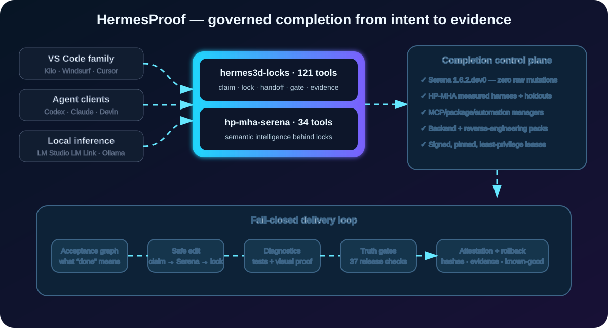
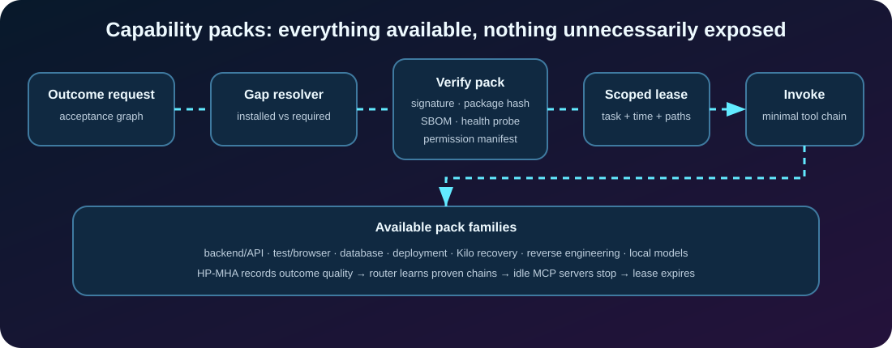
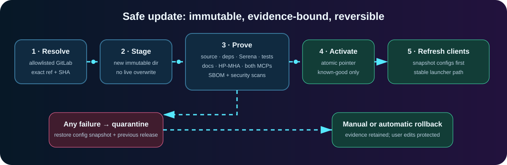
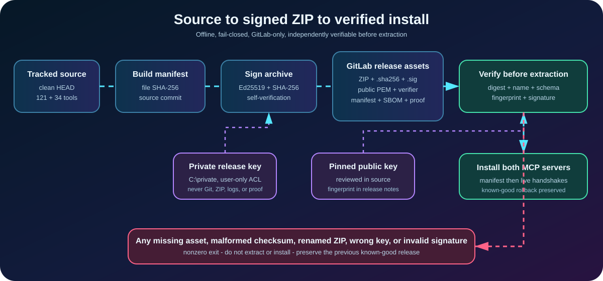
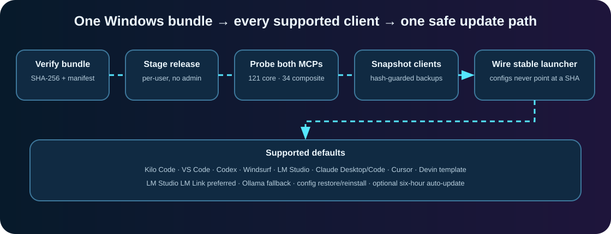

Claim, lock, hand off
Atomic file ownership, heartbeats, queues, inboxes, unlock requests, and explicit transfers prevent agent collisions.
One control plane for collision-free edits, Serena code intelligence, measured harness outcomes, just-in-time tools, local models, safe updates, and visual release evidence.
Two servers, one governed system
HermesProof separates durable coordination from advanced intelligence, while binding every mutation to a claimed task, exact lock, idempotency key, and evidence record.

Built for daily completion
Atomic file ownership, heartbeats, queues, inboxes, unlock requests, and explicit transfers prevent agent collisions.
52 catalogued tools from Serena 1.7.0; 15 semantic/LSP operations sit behind locks and no raw mutation bypass is exposed.
Installed-package hashes, scheduler holdouts, measured attribution, trace Merkle roots, and fail-closed verification.
Runtime, database, API, migration, container, diagnostics, browser-proof, dependency, and package recovery capabilities.
Install, pin, lease, enable, cycle, health-check, idle-disable, quarantine, schedule, and roll back capability servers.
LM Studio LM Link is preferred for fast remote-GPU inference; Ollama is a health-checked local fallback.
Local-first reverse-engineering inventory for owned targets, read-only first and covered by hashes, leases, locks, and proof.
Live MCP handshakes, diagnostics, tests, browser evidence, hash chains, and release artifacts show that features actually work.
Just-in-time capability packs
The capability resolver compares an outcome’s acceptance graph with installed abilities. Missing abilities arrive as signed, pinned packs with an SBOM, health probe, exact permissions, a task/time/path lease, and a rollback path.

Updates that cannot silently break a working setup

hermesproof-update checkOne installer, repeatable on every Windows 11 PC
The offline Ed25519 verifier authenticates the ZIP before extraction. The installer then validates its manifest, stages immutably, probes 121 + 34 tools, snapshots existing configuration, wires a stable launcher, and optionally enables a limited per-user auto-update task.


Get the ZIP, .sha256, .sig, public PEM, and standalone verifier from GitLab Releases.
Prove digest, filename, fingerprint, and Ed25519 signature before extraction.
.\install-hermesproof.ps1 -AutoUpdateCompletion is a proof obligation
A release cannot activate with skipped workspace integrity, client configuration, Serena, harness, docs, security, or live-server checks. Failed candidates are quarantined and client snapshots are restored.
Read the updater contract →Stop guessing whether the project works
HermesProof keeps projects focused on a working backend, navigable product, measurable progress, and a release that another PC can install today.